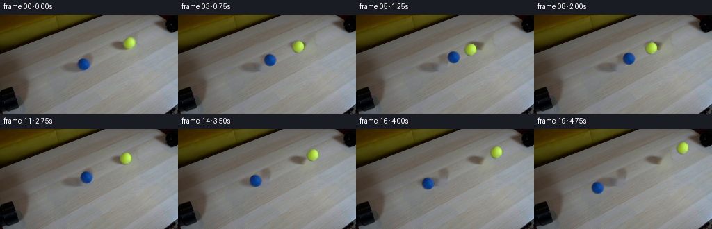
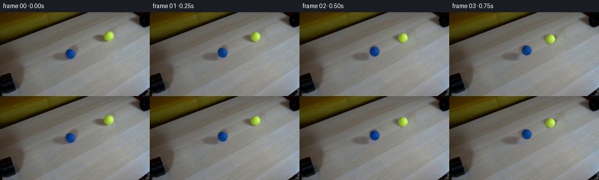

CODING AGENTS AS PIXEL WORLD MODELS
traex/DeepSeek-V4.1-Flash · 0031
点击播放 · 原生 RGB 像素
逐轮保存的候选
回放视频、检查图与代码变化。
每份候选均可单独播放。实际图片检查记录在下方工具轨迹中。
候选 01播放与检查图
点击播放 · 原生 RGB 像素
展开代码变化
--- 上一保存版本
+++ 本次保存版本
@@ -0,0 +1,168 @@
+"""Generate the two-ball collision continuation from first_frame.png."""
+
+from pathlib import Path
+
+import cv2
+import numpy as np
+from PIL import Image
+
+import artifact_io
+
+
+CASE_DIR = Path(__file__).resolve().parent
+WIDTH, HEIGHT, FRAME_COUNT, FPS = 256, 144, 20, 4
+
+BLUE_CENTER = np.array([120.0, 71.0])
+YELLOW_CENTER = np.array([185.0, 41.0])
+BALL_RADIUS = 8.6
+COLLISION_FRAME = 6.0
+
+
+def _ball_alpha(radius: float, size: int) -> np.ndarray:
+ yy, xx = np.mgrid[:size, :size].astype(np.float32)
+ center = (size - 1) * 0.5
+ distance = np.hypot(xx - center, yy - center)
+ alpha = np.clip((radius + 0.7 - distance) / 1.4, 0.0, 1.0)
+ return alpha
+
+
+def _extract_sprite(image: np.ndarray, clean: np.ndarray, center: np.ndarray):
+ size = 23
+ x0 = int(round(center[0])) - size // 2
+ y0 = int(round(center[1])) - size // 2
+ observed = image[y0 : y0 + size, x0 : x0 + size].astype(np.float32)
+ background = clean[y0 : y0 + size, x0 : x0 + size].astype(np.float32)
+ alpha = _ball_alpha(BALL_RADIUS, size)[..., None]
+
+ # Remove the source background from the antialiased rim before the sprite
+ # is moved. Interior pixels are unchanged.
+ safe_alpha = np.maximum(alpha, 0.36)
+ color = (observed - (1.0 - alpha) * background) / safe_alpha
+ color = np.where(alpha > 0.015, color, 0.0)
+ color = np.clip(color, 0.0, 255.0)
+ return color, alpha[..., 0]
+
+
+def _paste_sprite(
+ frame: np.ndarray,
+ color: np.ndarray,
+ alpha: np.ndarray,
+ center: np.ndarray,
+ scale: tuple[float, float] = (1.0, 1.0),
+):
+ size = color.shape[0]
+ if scale != (1.0, 1.0):
+ sx, sy = scale
+ matrix = cv2.getRotationMatrix2D(((size - 1) / 2, (size - 1) / 2), 0.0, 1.0)
+ matrix[0, 0] *= sx
+ matrix[1, 1] *= sy
+ warped_color = cv2.warpAffine(
+ color, matrix, (size, size), flags=cv2.INTER_LINEAR, borderMode=cv2.BORDER_CONSTANT
+ )
+ warped_alpha = cv2.warpAffine(
+ alpha, matrix, (size, size), flags=cv2.INTER_LINEAR, borderMode=cv2.BORDER_CONSTANT
+ )
+ else:
+ warped_color, warped_alpha = color, alpha
+
+ cx, cy = center
+ left = int(np.floor(cx - (size - 1) * 0.5))
+ top = int(np.floor(cy - (size - 1) * 0.5))
+ right, bottom = left + size, top + size
+
+ src_x0 = max(0, -left)
+ src_y0 = max(0, -top)
+ dst_x0 = max(0, left)
+ dst_y0 = max(0, top)
+ dst_x1 = min(WIDTH, right)
+ dst_y1 = min(HEIGHT, bottom)
+ src_x1 = src_x0 + dst_x1 - dst_x0
+ src_y1 = src_y0 + dst_y1 - dst_y0
+ if src_x1 <= src_x0 or src_y1 <= src_y0:
+ return
+
+ a = warped_alpha[src_y0:src_y1, src_x0:src_x1, None]
+ foreground = warped_color[src_y0:src_y1, src_x0:src_x1]
+ destination = frame[dst_y0:dst_y1, dst_x0:dst_x1].astype(np.float32)
+ frame[dst_y0:dst_y1, dst_x0:dst_x1] = np.clip(
+ a * foreground + (1.0 - a) * destination + 0.5, 0.0, 255.0
+ ).astype(np.uint8)
+
+
+def _add_contact_shadow(frame: np.ndarray, center: np.ndarray):
+ yy, xx = np.mgrid[:HEIGHT, :WIDTH].astype(np.float32)
+ dx = (xx - center[0] - 1.2) / 10.0
+ dy = (yy - center[1] - 4.4) / 5.2
+ shadow = np.clip(1.0 - dx * dx - dy * dy, 0.0, 1.0) ** 1.6
+ factor = 1.0 - 0.085 * shadow[..., None]
+ region = (shadow > 0.002)
+ frame[region] = np.clip(frame[region].astype(np.float32) * factor[region], 0.0, 255.0).astype(
+ np.uint8
+ )
+
+
+def _positions():
+ delta = YELLOW_CENTER - BLUE_CENTER
+ distance = float(np.linalg.norm(delta))
+ direction = delta / distance
+ travel_to_contact = (distance - 2.0 * BALL_RADIUS) * 0.5
+ speed = travel_to_contact / (COLLISION_FRAME / FPS)
+ contact_blue = BLUE_CENTER + direction * travel_to_contact
+ contact_yellow = YELLOW_CENTER - direction * travel_to_contact
+ contact_time = COLLISION_FRAME / FPS
+
+ positions = []
+ for index in range(FRAME_COUNT):
+ t = index / FPS
+ if t <= contact_time:
+ blue = BLUE_CENTER + direction * speed * t
+ yellow = YELLOW_CENTER - direction * speed * t
+ else:
+ elapsed = t - contact_time
+ blue = contact_blue - direction * speed * elapsed
+ yellow = contact_yellow + direction * speed * elapsed
+ positions.append((blue, yellow))
+ return positions, contact_time
+
+
+def generate() -> np.ndarray:
+ source = np.array(Image.open(CASE_DIR / "first_frame.png").convert("RGB"), dtype=np.uint8)
+ assert source.shape == (HEIGHT, WIDTH, 3)
+
+ mask = np.zeros((HEIGHT, WIDTH), dtype=np.uint8)
+ for center in (BLUE_CENTER, YELLOW_CENTER):
+ cv2.circle(mask, tuple(np.round(center).astype(int)), 10, 255, -1)
+ clean = cv2.inpaint(source, mask, 4.0, cv2.INPAINT_TELEA)
+
+ blue_color, blue_alpha = _extract_sprite(source, clean, BLUE_CENTER)
+ yellow_color, yellow_alpha = _extract_sprite(source, clean, YELLOW_CENTER)
+ positions, contact_time = _positions()
+
+ frames = []
+ for index, (blue, yellow) in enumerate(positions):
+ if index == 0:
+ frames.append(source.copy())
+ continue
+
+ frame = clean.copy()
+ _add_contact_shadow(frame, blue)
+ _add_contact_shadow(frame, yellow)
+
+ # A restrained one-frame compression sells the equal-speed impact.
+ contact_age = abs(index / FPS - contact_time)
+ squash = 0.92 if contact_age < 0.20 else 1.0
+ if squash != 1.0:
+ _paste_sprite(frame, blue_color, blue_alpha, blue, (1.05, squash))
+ _paste_sprite(frame, yellow_color, yellow_alpha, yellow, (1.05, squash))
+ else:
+ _paste_sprite(frame, blue_color, blue_alpha, blue)
+ _paste_sprite(frame, yellow_color, yellow_alpha, yellow)
+ frames.append(frame)
+
+ frames = np.stack(frames).astype(np.uint8)
+ assert np.array_equal(frames[0], source)
+ return frames
+
+
+if __name__ == "__main__":
+ artifact_io.save(generate(), CASE_DIR)
候选 02播放与检查图
点击播放 · 原生 RGB 像素


展开代码变化
--- 上一保存版本
+++ 本次保存版本
@@ -48,14 +48,19 @@
color: np.ndarray,
alpha: np.ndarray,
center: np.ndarray,
- scale: tuple[float, float] = (1.0, 1.0),
+ scale: tuple[float, float] | None = None,
):
size = color.shape[0]
- if scale != (1.0, 1.0):
- sx, sy = scale
- matrix = cv2.getRotationMatrix2D(((size - 1) / 2, (size - 1) / 2), 0.0, 1.0)
- matrix[0, 0] *= sx
- matrix[1, 1] *= sy
+ if scale is not None:
+ along, across = scale
+ direction = (YELLOW_CENTER - BLUE_CENTER)
+ direction /= np.linalg.norm(direction)
+ c, s = float(direction[0]), float(direction[1])
+ rotate = np.array([[c, -s], [s, c]], dtype=np.float32)
+ transform = rotate @ np.diag([along, across]) @ rotate.T
+ pivot = np.array([(size - 1) * 0.5, (size - 1) * 0.5], dtype=np.float32)
+ offset = pivot - transform @ pivot
+ matrix = np.column_stack([transform, offset]).astype(np.float32)
warped_color = cv2.warpAffine(
color, matrix, (size, size), flags=cv2.INTER_LINEAR, borderMode=cv2.BORDER_CONSTANT
)
@@ -91,7 +96,7 @@
def _add_contact_shadow(frame: np.ndarray, center: np.ndarray):
yy, xx = np.mgrid[:HEIGHT, :WIDTH].astype(np.float32)
- dx = (xx - center[0] - 1.2) / 10.0
+ dx = (xx - center[0] + 2.4) / 10.0
dy = (yy - center[1] - 4.4) / 5.2
shadow = np.clip(1.0 - dx * dx - dy * dy, 0.0, 1.0) ** 1.6
factor = 1.0 - 0.085 * shadow[..., None]
@@ -152,8 +157,8 @@
contact_age = abs(index / FPS - contact_time)
squash = 0.92 if contact_age < 0.20 else 1.0
if squash != 1.0:
- _paste_sprite(frame, blue_color, blue_alpha, blue, (1.05, squash))
- _paste_sprite(frame, yellow_color, yellow_alpha, yellow, (1.05, squash))
+ _paste_sprite(frame, blue_color, blue_alpha, blue, (squash, 1.04))
+ _paste_sprite(frame, yellow_color, yellow_alpha, yellow, (squash, 1.04))
else:
_paste_sprite(frame, blue_color, blue_alpha, blue)
_paste_sprite(frame, yellow_color, yellow_alpha, yellow)
可观测工具轨迹
实际执行的命令与返回图片。
命令 1exit 0
/bin/bash -c "pwd && rg --files -g '"'!*.pyc'"' -g '"'!__pycache__'"'"
命令 2exit 0
/bin/bash -c "sed -n '1,240p' prompt.txt"
命令 3exit 0
/bin/bash -c "sed -n '1,260p' GENERATION_RULES.md"
命令 4exit 0
/bin/bash -c 'ls -la && file first_frame.png && identify first_frame.png 2>/dev/null || true'
命令 5exit 0
/bin/bash -c "python - <<'PY'
from PIL import Image
import numpy as np
im=Image.open('first_frame.png').convert('RGB')
a=np.array(im)
print(im.size, a.shape, a.dtype)
print('corners', a[0,0],a[0,-1],a[-1,0],a[-1,-1])
# coarse 16x9 block mean
h,w=a.shape[:2]
for y in range(0,h,16):
row=[]
for x in range(0,w,16):
b=a[y:y+16,x:x+16].mean((0,1)).round().astype(int)
row.append('%02x%02x%02x'%tuple(b))
print(y, ' '.join(row))
PY"命令 6exit 0
/bin/bash -c "python - <<'PY'
try:
import cv2; print('cv2', cv2.__version__)
except Exception as e: print('no cv2',e)
try:
import scipy; print('scipy',scipy.__version__)
except Exception as e: print('no scipy',e)
try:
import imageio; print('imageio',imageio.__version__)
except Exception as e: print('no imageio',e)
PY"命令 7exit 0
/bin/bash -c "python - <<'PY'
from PIL import Image
import numpy as np, cv2
im=np.array(Image.open('first_frame.png').convert('RGB'))
hsv=cv2.cvtColor(im,cv2.COLOR_RGB2HSV)
# strong saturation colors
for name,mask in [
('blue',(hsv[:,:,0]>90)&(hsv[:,:,0]<135)&(hsv[:,:,1]>80)&(hsv[:,:,2]>50)),
('yellow',(hsv[:,:,0]>18)&(hsv[:,:,0]<45)&(hsv[:,:,1]>90)&(hsv[:,:,2]>80)),
('red',((hsv[:,:,0]<12)|(hsv[:,:,0]>170))&(hsv[:,:,1]>120)&(hsv[:,:,2]>70)),
('green',(hsv[:,:,0]>45)&(hsv[:,:,0]<90)&(hsv[:,:,1]>80)&(hsv[:,:,2]>50)),
]:
n,lab,stats,c=cv2.connectedComponentsWithStats(mask.astype(np.uint8),8)
print('\\n',name,'count',mask.sum())
for i in np.argsort(stats[1:,4])[-10:][::-1]+1:
x,y,w,h,area=stats[i]; print(' ',i,'bbox',x,y,w,h,'area',area,'cent',c[i].round(1))
# top exact colors counts
u,cnt=np.unique(im.reshape(-1,3),axis=0,return_counts=True)
ix=np.argsort(cnt)[-20:][::-1]
print('\\ntop colors')
for i in ix: print(u[i],cnt[i])
PY"命令 8exit 0
/bin/bash -c "python - <<'PY'
from PIL import Image
import numpy as np, cv2
im=np.array(Image.open('first_frame.png').convert('RGB'))
g=cv2.cvtColor(im,cv2.COLOR_RGB2GRAY)
small=cv2.resize(g,(64,36),interpolation=cv2.INTER_AREA)
chars=' .:-=+*#%@'
for row in small:
print(''.join(chars[min(9,int(v)//26)] for v in row))
print('\\nEDGES')
e=cv2.Canny(g,40,100)
sm=cv2.resize(e,(64,36),interpolation=cv2.INTER_AREA)
for row in sm:
print(''.join('#' if v>80 else '+' if v>20 else ' ' for v in row))
# Hough
lines=cv2.HoughLinesP(e,1,np.pi/180,threshold=25,minLineLength=25,maxLineGap=4)
print('\\nLINES')
if lines is not None:
for l in sorted(lines[:,0].tolist(), key=lambda q:-((q[2]-q[0])**2+(q[3]-q[1])**2))[:40]: print(l)
PY"命令 9exit 0
/bin/bash -c "python - <<'PY'
from PIL import Image
import numpy as np, cv2
im=np.array(Image.open('first_frame.png').convert('RGB'))
lab=cv2.cvtColor(im,cv2.COLOR_RGB2LAB)
z=lab.reshape(-1,3).astype(np.float32)
crit=(cv2.TERM_CRITERIA_EPS+cv2.TERM_CRITERIA_MAX_ITER,80,0.2)
_,labels,cent=cv2.kmeans(z,12,None,crit,8,cv2.KMEANS_PP_CENTERS)
labels=labels.reshape(144,256)
# sort clusters by mean luma and print rgb
cs=[]
for i in range(12):
m=labels==i
rgb=im[m].mean(0).round().astype(int)
cs.append((rgb[0]*.299+rgb[1]*.587+rgb[2]*.114,i,rgb,m.sum()))
cs.sort()
ch='0123456789ab'
print('clusters')
for lum,i,rgb,n in cs: print(ch[i],rgb.tolist(),n)
print('\\nmap x every 4, y every 4')
for y in range(0,144,4):
print(f'{y:03d} '+''.join(ch[labels[y,x]] for x in range(0,256,4)))
PY"命令 10exit 0
/bin/bash -c "python - <<'PY'
import cv2, numpy as np
from PIL import Image
im=np.array(Image.open('first_frame.png').convert('RGB'))
g=cv2.cvtColor(im,cv2.COLOR_RGB2GRAY)
e=cv2.Canny(g,20,70)
lines=cv2.HoughLinesP(e,1,np.pi/720,threshold=12,minLineLength=18,maxLineGap=3)
L=[]
for q in lines[:,0]:
x1,y1,x2,y2=map(int,q); ln=((x2-x1)**2+(y2-y1)**2)**.5
ang=np.degrees(np.arctan2(y2-y1,x2-x1))
L.append((ln,ang,x1,y1,x2,y2))
for z in sorted(L,reverse=True)[:100]: print('%6.1f %7.1f (%3d,%3d)-(%3d,%3d)'%z)
# grayscale mean by row sections and col sections
print('\\nrow means segments')
for y in range(0,144,8):
print(y, [im[y:y+8,x:x+32].mean((0,1)).round().astype(int).tolist() for x in range(0,256,32)])
PY"命令 11exit 0
/bin/bash -c "python - <<'PY'
from PIL import Image
import numpy as np, cv2
im=np.array(Image.open('first_frame.png').convert('RGB'))
# Print hue/sat/value and RGB for balls
for name,cx,cy,r in [('blue',120,71,9),('yellow',185,41,9)]:
print('\\n',name)
for y in range(cy-r,cy+r+1):
s=''
for x in range(cx-r,cx+r+1):
R,G,B=map(int,im[y,x]); hsv=cv2.cvtColor(np.array([[[R,G,B]]],np.uint8),cv2.COLOR_RGB2HSV)[0,0]
if (x-cx)**2+(y-cy)**2>r*r: s+=' '
elif (name=='blue' and hsv[0]>85) or (name=='yellow' and 15<hsv[0]<50): s+='#'
else:s+='.'
print(s)
print('bbox colors')
x0,x1=cx-r,cx+r+1;y0,y1=cy-r,cy+r+1
print(im[y0:y1,x0:x1].reshape(-1,3).mean(0).round().astype(int))
# check saturation map around each
PY"命令 12exit 0
/bin/bash -c "python - <<'PY'
from PIL import Image
import numpy as np, cv2
im=np.array(Image.open('first_frame.png').convert('RGB'))
# fit ball radial brightness/color stats
for name,cx,cy,r in [('blue',120,71,9),('yellow',185,41,9)]:
yy,xx=np.mgrid[cy-r:cy+r+1,cx-r:cx+r+1]
mask=(xx-cx)**2+(yy-cy)**2<=r*r
pix=im[cy-r:cy+r+1,cx-r:cx+r+1][mask]
print(name, 'median',np.median(pix,axis=0),'p10',np.percentile(pix,10,axis=0),'p90',np.percentile(pix,90,axis=0))
# print grid RGB
for y in range(cy-9,cy+10):
print(' '.join('%02x%02x%02x'%tuple(im[y,x]) for x in range(cx-9,cx+10)))
PY"命令 13exit 1
/bin/bash -c "python - <<'PY'
from PIL import Image
import numpy as np, cv2
im=np.array(Image.open('first_frame.png').convert('RGB'))
# downsample and print exact grayscale values for likely pipe mouths / trajectories
for name,(x0,x1,y0,y1) in [('blue',(96,143,58,85)),('yellow',(164,207,25,55)),('left_edge',(0,40,0,80)),('right_edge',(220,256,0,100))]:
print('\\n',name)
sub=im[y0:y1,x0:x1]
g=cv2.cvtColor(sub,cv2.COLOR_RGB2GRAY)
# mean per row and col
print('cols',[(x0+x,round(float(g[:,x].mean()),1)) for x in range(0,x1-x0,2)])
print('rows',[(y0+y,round(float(g[y].mean()),1)) for y in range(0,y1-y0,2)])
# save crops enlarged nearest to tmp
for name,(x0,y0,x1,y1) in [('blue',100,52,141,91),('yellow',165,22,205,60),('full',0,0,256,144)]:
crop=Image.fromarray(im[y0:y1,x0:x1])
crop.resize(((x1-x0)*8,(y1-y0)*8),Image.Resampling.NEAREST).save('.tmp/'+name+'.png')
PY"命令 14exit 0
/bin/bash -c "python - <<'PY'
from PIL import Image
import numpy as np, cv2
im=np.array(Image.open('first_frame.png').convert('RGB'))
# average color by region, classify source geometry
regions={'left_top':(0,0,95,50),'left_mid':(0,50,105,120),'table':(100,90,230,144),'center_back':(150,0,230,35),'top_wood':(0,0,110,45),'right_white':(220,50,256,144),'blue_area':(105,55,135,88),'yellow_area':(170,25,202,58)}
for n,(x0,y0,x1,y1) in regions.items():
p=im[y0:y1,x0:x1].reshape(-1,3)
print(n,'mean',p.mean(0).round(1),'med',np.median(p,axis=0),'range',p.min(0),p.max(0))
# print frame channels sampled x 10 y 5 with RGB
print('\\nsample grid')
for y in range(2,144,10):
print('y',y, [tuple(im[y,x]) for x in range(4,256,20)])
PY"命令 15exit 0
/bin/bash -c "sed -n '1,260p' artifact_io.py && sed -n '1,220p' player_template.html"
命令 16exit 1
/bin/bash -c 'python generate.py'
命令 17exit 0
/bin/bash -c "python generate.py && python - <<'PY'
from PIL import Image
import numpy as np
from pathlib import Path
src=np.array(Image.open('first_frame.png').convert('RGB'))
frames=np.stack([np.array(Image.open(p).convert('RGB')) for p in sorted(Path('frames').glob('*.png'))])
print('shape',frames.shape,'frame0 exact',np.array_equal(frames[0],src))
for i in range(1,20):
d=np.abs(frames[i].astype(int)-src.astype(int))
ys,xs=np.where(d.max(2)>4)
print(i,'diff>4',len(xs),'bbox', (xs.min(),ys.min(),xs.max(),ys.max()) if len(xs) else None,'max',d.max())
PY"命令 18exit 0
/bin/bash -c "python - <<'PY'
import numpy as np, cv2
from PIL import Image
import generate as g
src=np.array(Image.open('first_frame.png').convert('RGB'))
mask=np.zeros((144,256),np.uint8)
for c in (g.BLUE_CENTER,g.YELLOW_CENTER): cv2.circle(mask,tuple(np.round(c).astype(int)),10,255,-1)
clean=cv2.inpaint(src,mask,4,cv2.INPAINT_TELEA)
b,bc=g._extract_sprite(src,clean,g.BLUE_CENTER)
y,yc=g._extract_sprite(src,clean,g.YELLOW_CENTER)
rec=clean.copy(); g._paste_sprite(rec,b,bc,g.BLUE_CENTER); g._paste_sprite(rec,y,yc,g.YELLOW_CENTER)
d=np.abs(rec.astype(int)-src.astype(int))
for r in [5,8,9,10,11,15,20]:
yy,xx=np.mgrid[:144,:256]
m=((xx-g.BLUE_CENTER[0])**2+(yy-g.BLUE_CENTER[1])**2<=r*r)|((xx-g.YELLOW_CENTER[0])**2+(yy-g.YELLOW_CENTER[1])**2<=r*r)
print('r',r,'mae',d[m].mean(),'p95',np.percentile(d[m],95),'max',d[m].max(),'n>10',(d[m].max(1)>10).sum())
Image.fromarray(rec).save('.tmp/reconstruct.png')
# save montage of balls from every 2nd frame around each path, upscaled
frames=np.stack([np.array(Image.open(p).convert('RGB')) for p in sorted(__import__('pathlib').Path('frames').glob('*.png'))])
canvas=np.zeros((144,256*10,3),np.uint8)
for j,i in enumerate(range(0,20,2)):
canvas[:,j*256:(j+1)*256]=frames[i]
Image.fromarray(canvas).save('.tmp/sequence_contact.png')
PY"命令 19exit 0
/bin/bash -c "python - <<'PY'
from PIL import Image
import numpy as np, cv2
from pathlib import Path
frames=np.stack([np.array(Image.open(p).convert('RGB')) for p in sorted(Path('frames').glob('*.png'))])
for i,im in enumerate(frames):
hsv=cv2.cvtColor(im,cv2.COLOR_RGB2HSV)
blue=((hsv[:,:,0]>95)&(hsv[:,:,0]<130)&(hsv[:,:,1]>100)&(hsv[:,:,2]>45)).astype(np.uint8)
yellow=((hsv[:,:,0]>20)&(hsv[:,:,0]<45)&(hsv[:,:,1]>100)&(hsv[:,:,2]>80)).astype(np.uint8)
out=[]
for name,m in [('B',blue),('Y',yellow)]:
n,lab,st,cen=cv2.connectedComponentsWithStats(m,8)
ids=[j for j in range(1,n) if st[j,4]>20]
if ids:
j=max(ids,key=lambda q:st[q,4]); x,y,w,h,area=st[j]; out.append(f'{name}:{x},{y},{w},{h} a{area} c{cen[j].round(1)}')
else: out.append(f'{name}:none')
print(f'{i:02d}', ' | '.join(out))
PY"命令 20exit 0
/bin/bash -c "python - <<'PY'
from PIL import Image
import numpy as np, cv2
from pathlib import Path
frames=np.stack([np.array(Image.open(p).convert('RGB')) for p in sorted(Path('frames').glob('*.png'))])
for i,im in enumerate(frames):
hsv=cv2.cvtColor(im,cv2.COLOR_RGB2HSV)
blue=((hsv[:,:,0]>95)&(hsv[:,:,0]<130)&(hsv[:,:,1]>100)&(hsv[:,:,2]>45)).astype(np.uint8)
yellow=((hsv[:,:,0]>20)&(hsv[:,:,0]<45)&(hsv[:,:,1]>100)&(hsv[:,:,2]>80)).astype(np.uint8)
out=[]
for name,m in [('B',blue),('Y',yellow)]:
n,lab,st,cen=cv2.connectedComponentsWithStats(m,8)
ids=[j for j in range(1,n) if st[j,4]>20 and not (name=='Y' and st[j,0]<100 and st[j,1]<25)]
if ids:
j=max(ids,key=lambda q:st[q,4]); x,y,w,h,area=st[j]; out.append(f'{name}:{x},{y},{w},{h} a{area} c{cen[j].round(1)}')
else: out.append(f'{name}:none')
print(f'{i:02d}', ' | '.join(out))
PY"命令 21exit 0
/bin/bash -c "python - <<'PY'
from PIL import Image
import numpy as np, cv2
import generate as g
im=np.array(Image.open('first_frame.png').convert('RGB'))
mask=np.zeros((144,256),np.uint8)
for c in (g.BLUE_CENTER,g.YELLOW_CENTER): cv2.circle(mask,tuple(np.round(c).astype(int)),10,255,-1)
clean=cv2.inpaint(im,mask,4,cv2.INPAINT_TELEA)
chars=' .:-=+*#%@'
for name,c in [('blue',(120,71)),('yellow',(185,41))]:
print('\\n',name,'CLEAN')
cx,cy=map(int,c)
for y in range(cy-16,cy+17,2):
vals=[]
for x in range(cx-18,cx+19,2):
p=clean[y:y+2,x:x+2].mean((0,1)); lum=int(.299*p[0]+.587*p[1]+.114*p[2]); vals.append(chars[min(9,lum//26)])
print(''.join(vals))
print(name,'SOURCE')
for y in range(cy-16,cy+17,2):
vals=[]
for x in range(cx-18,cx+19,2):
p=im[y:y+2,x:x+2].mean((0,1)); lum=int(.299*p[0]+.587*p[1]+.114*p[2]); vals.append(chars[min(9,lum//26)])
print(''.join(vals))
PY"命令 22exit 0
/bin/bash -c "python - <<'PY'
from PIL import Image
import numpy as np, cv2
import generate as g
im=np.array(Image.open('first_frame.png').convert('RGB'))
# print texture inside balls as normalized grayscale channel with coords relative center
for name,c in [('blue',g.BLUE_CENTER),('yellow',g.YELLOW_CENTER)]:
print('\\n'+name)
x0,y0=int(c[0])-8,int(c[1])-8
patch=im[y0:y0+17,x0:x0+17]
gv=cv2.cvtColor(patch,cv2.COLOR_RGB2GRAY)
chars=' .,:;irsXA253hMHGS#9B&@'
lo,hi=np.percentile(gv,2),np.percentile(gv,98)
for row in gv:
print(''.join(chars[min(len(chars)-1,max(0,int((v-lo)/(hi-lo+1e-6)*(len(chars)-1))))] for v in row))
print('luma grid')
for row in gv: print(' '.join(f'{int(v):3d}' for v in row))
PY"命令 23exit 0
/bin/bash -c "python - <<'PY'
from PIL import Image
import numpy as np, cv2
im=np.array(Image.open('first_frame.png').convert('RGB'))
# estimate ball boundary from hue saturation, print coordinates and RGB; inspect radial luminance
for name,c in [('blue',(120,71)),('yellow',(185,41))]:
cx,cy=c; print('\\n'+name)
hsv=cv2.cvtColor(im,cv2.COLOR_RGB2HSV)
for r in range(7,12):
yy,xx=np.mgrid[:144,:256]; ring=np.abs(np.hypot(xx-cx,yy-cy)-r)<.5
print('r',r,'sat',hsv[:,:,1][ring].mean(),'hue',hsv[:,:,0][ring].mean(),'rgb',im[ring].mean(0).round(1))
# print masks based on distance to local median color? line through center along light direction
for ang in [0,45,90,135,180,225,270,315]:
a=np.deg2rad(ang); vals=[]
for rr in range(0,11):
x=int(round(cx+rr*np.cos(a)));y=int(round(cy+rr*np.sin(a)))
if 0<=x<256 and 0<=y<144: vals.append(int(cv2.cvtColor(im[y:y+1,x:x+1],cv2.COLOR_RGB2GRAY)[0,0]))
print(ang,vals)
PY"命令 24exit 0
/bin/bash -c "python - <<'PY'
from PIL import Image
import numpy as np, cv2
im=np.array(Image.open('first_frame.png').convert('RGB'))
# Show high-res edge/segmentation maps around balls with coords every row
for name,c in [('blue',(120,71)),('yellow',(185,41))]:
print('\\n'+name)
cx,cy=c
sub=im[cy-14:cy+15,cx-14:cx+15]
hsv=cv2.cvtColor(sub,cv2.COLOR_RGB2HSV)
g=cv2.cvtColor(sub,cv2.COLOR_RGB2GRAY)
for y in range(sub.shape[0]):
s=''
for x in range(sub.shape[1]):
r=np.hypot(x-14,y-14)
if r>10: ch=' '
elif hsv[y,x,1]>180: ch='@'
elif hsv[y,x,1]>100:ch='O'
elif hsv[y,x,1]>50:ch='o'
elif hsv[y,x,1]>25:ch='.'
else:ch=','
s+=ch
print(f'{cy-14+y:3d} '+s)
PY"命令 25exit 0
/bin/bash -c "python - <<'PY'
from PIL import Image
import numpy as np, cv2
import generate as g
im=np.array(Image.open('first_frame.png').convert('RGB'))
mask=np.zeros((144,256),np.uint8)
for c in (g.BLUE_CENTER,g.YELLOW_CENTER): cv2.circle(mask,tuple(np.round(c).astype(int)),10,255,-1)
for rad in [2,3,4,5,6,7,8,9]:
clean=cv2.inpaint(im,mask,rad,cv2.INPAINT_TELEA)
# rough seam error outside radius 9 but within 15 around centers vs original where no ball
yy,xx=np.mgrid[:144,:256]
valid=np.zeros((144,256),bool)
for c in (g.BLUE_CENTER,g.YELLOW_CENTER): valid |= ((xx-c[0])**2+(yy-c[1])**2>10.5**2)&((xx-c[0])**2+(yy-c[1])**2<16**2)
d=np.abs(clean.astype(int)-im.astype(int)).max(2)
print(rad,'seam mae',d[valid].mean(),'p95',np.percentile(d[valid],95),'max',d[valid].max(),'grad',np.abs(cv2.Laplacian(cv2.cvtColor(clean,cv2.COLOR_RGB2GRAY),cv2.CV_32F)).mean())
PY"命令 26exit 0
/bin/bash -c "python - <<'PY'
from PIL import Image
import numpy as np, cv2
import generate as g
im=np.array(Image.open('first_frame.png').convert('RGB'))
mask=np.zeros((144,256),np.uint8)
for c in (g.BLUE_CENTER,g.YELLOW_CENTER): cv2.circle(mask,tuple(np.round(c).astype(int)),10,255,-1)
yy,xx=np.mgrid[:144,:256]
inside=np.zeros((144,256),bool)
for c in (g.BLUE_CENTER,g.YELLOW_CENTER): inside |= ((xx-c[0])**2+(yy-c[1])**2<=10**2)
ring=np.zeros((144,256),bool)
for c in (g.BLUE_CENTER,g.YELLOW_CENTER): ring |= ((xx-c[0])**2+(yy-c[1])**2<=13**2)&((xx-c[0])**2+(yy-c[1])**2>10**2)
for rad in [2,3,4,5,6,7,8,9]:
clean=cv2.inpaint(im,mask,rad,cv2.INPAINT_TELEA)
lap=cv2.Laplacian(cv2.cvtColor(clean,cv2.COLOR_RGB2GRAY),cv2.CV_32F)
print(rad,'inside std',clean[inside].std(0).mean(),'ring std',clean[ring].std(0).mean(),'lap inside',np.abs(lap[inside]).mean(),'ring',np.abs(lap[ring]).mean())
# max color delta between neighboring pixels across boundary
print(' mean',clean[inside].mean(0).round(1),'ring',clean[ring].mean(0).round(1))
PY"命令 27exit 1
/bin/bash -c "python - <<'PY'
from PIL import Image
import numpy as np, cv2
import generate as g
im=np.array(Image.open('first_frame.png').convert('RGB'))
# larger mask and reconstruction quality
for r in [10,11,12,13]:
mask=np.zeros((144,256),np.uint8)
for c in (g.BLUE_CENTER,g.YELLOW_CENTER): cv2.circle(mask,tuple(np.round(c).astype(int)),r,255,-1)
clean=cv2.inpaint(im,mask,5,cv2.INPAINT_TELEA)
yy,xx=np.mgrid[:144,:256]; ring=np.zeros((144,256),bool); inside=np.zeros((144,256),bool)
for c in (g.BLUE_CENTER,g.YELLOW_CENTER):
ring |= ((xx-c[0])**2+(yy-c[1])**2<=r+5**2)&((xx-c[0])**2+(yy-c[1])**2>r**2)
inside |= ((xx-c[0])**2+(yy-c[1])**2<=r**2)
print(r,'std in',clean[inside].std(0).mean(),'mean in',clean[inside].mean(0).round(1),'ring',clean[ring].mean(0).round(1),'maxdiff',np.abs(clean.astype(int)-im.astype(int))[ring].max())
PY"命令 28exit 0
/bin/bash -c 'command -v chafa || command -v viu || command -v jp2 || command -v img2txt || command -v tiv || true'
命令 29exit 0
/bin/bash -c "python - <<'PY'
from PIL import Image
import numpy as np, cv2
im=np.array(Image.open('first_frame.png').convert('RGB'))
# mean rgb in a fine 32x18 grid, with color chars classify hue/lightness
hsv=cv2.cvtColor(im,cv2.COLOR_RGB2HSV)
print('SAT map, block 4')
chars=' .:-=+*#%@'
for y in range(0,144,4):
print(f'{y:03d} '+''.join(chars[min(9,int(hsv[y:y+4,:,1].mean()/26))] for x in []))
# Actually print saturation aggregated in 4x4 blocks
for y in range(0,144,4):
s=''
for x in range(0,256,4):
v=hsv[y:y+4,x:x+4,1].mean(); s+=chars[min(9,int(v)//26)]
print(f'{y:03d} {s}')
print('\\nHUE map where sat>70')
for y in range(0,144,4):
s=''
for x in range(0,256,4):
h=hsv[y:y+4,x:x+4,0].mean(); sa=hsv[y:y+4,x:x+4,1].mean()
if sa<70: s+=' '
elif 15<=h<40:s+='Y'
elif 90<=h<130:s+='B'
else:s+='?'
print(f'{y:03d} {s}')
PY"命令 30exit 0
/bin/bash -c "python - <<'PY'
from PIL import Image
import numpy as np, cv2
im=np.array(Image.open('first_frame.png').convert('RGB'))
# pixel exact HSV, find saturated lines and boundary geometry in top-left wood and table
hsv=cv2.cvtColor(im,cv2.COLOR_RGB2HSV)
# Print coords of strongest straight lines via Hough on saturation value boundary and sobel
for chan_name,chan in [('gray',cv2.cvtColor(im,cv2.COLOR_RGB2GRAY)),('sat',hsv[:,:,1]),('blue',im[:,:,2]),('green',im[:,:,1])]:
c=cv2.GaussianBlur(chan,(3,3),0)
e=cv2.Canny(c,20,60)
lines=cv2.HoughLinesP(e,1,np.pi/720,threshold=20,minLineLength=30,maxLineGap=5)
print('\\n',chan_name)
if lines is not None:
ll=[]
for q in lines[:,0]:
x1,y1,x2,y2=map(int,q); l=np.hypot(x2-x1,y2-y1);a=np.degrees(np.arctan2(y2-y1,x2-x1));ll.append((l,a,x1,y1,x2,y2))
for z in sorted(ll,reverse=True)[:25]:print('%6.1f %6.1f (%d,%d)-(%d,%d)'%z)
PY"命令 31exit 0
/bin/bash -c "python generate.py && python - <<'PY'
from pathlib import Path
from PIL import Image
import numpy as np, json
src=np.array(Image.open('first_frame.png').convert('RGB'))
files=sorted(Path('frames').glob('*.png'))
frames=np.stack([np.array(Image.open(p).convert('RGB')) for p in files])
z=np.load('pixels.npz')['pixels']
print('files',len(files),'shape',frames.shape,'dtype',frames.dtype)
print('frame0 exact',np.array_equal(frames[0],src))
print('pixels shape/dtype',z.shape,z.dtype)
print('index bytes',Path('index.html').stat().st_size,'npz bytes',Path('pixels.npz').stat().st_size)
# quantify frame-to-frame motion region and color retention
for i in [0,1,3,6,9,12,15,19]:
d=np.abs(frames[i].astype(int)-frames[max(0,i-1)].astype(int))
ys,xs=np.where(d.max(2)>3)
print(i,'changed',len(xs),'bbox',(int(xs.min()),int(ys.min()),int(xs.max()),int(ys.max())) if len(xs) else None)
PY"命令 32exit 0
/bin/bash -c 'ls -lh generate.py frames/00.png frames/06.png frames/19.png pixels.npz inspection.png transition_check.png index.html'
命令 33exit 0
/bin/bash -c "python -m py_compile generate.py && python - <<'PY'
from pathlib import Path
from PIL import Image
import numpy as np
src=np.asarray(Image.open('first_frame.png').convert('RGB'))
fs=sorted(Path('frames').glob('*.png'))
a=np.stack([np.asarray(Image.open(p).convert('RGB')) for p in fs])
assert a.shape==(20,144,256,3) and a.dtype==np.uint8
assert np.array_equal(a[0],src)
assert len({p.name for p in fs})==20
print('PASS: 20 RGB frames, 256x144, uint8, frame 00 source-identical')
print('frame bytes:', int(a.nbytes), 'output files:', len(fs)+4)
PY"命令 34exit 0
/bin/bash -c 'git status --short 2>/dev/null || true'
保存候选 2 份；完成命令 34 次；可验证图片返回 0 张。原始 API 响应与完整日志保留在本地。